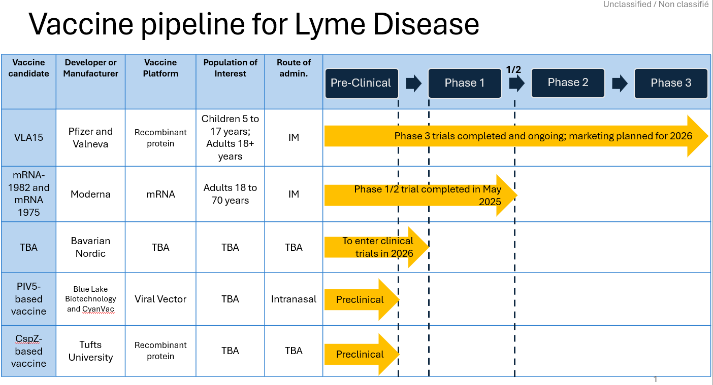

Loading source-backed Lyme vaccine pipeline and evidence records…
Loading…
Candidate positions reflect the dashboard status field. Open each card’s source link before using the stage in outreach or analysis.
The same source-provenance concept used in the RSV evidence map is adapted here: registry, literature, public health, regulatory, developer, and synthesis sources are tracked separately.
Click a cell to filter records to that evidence-domain/evidence-type intersection. Cell intensity indicates the number of matching records after current filters are applied.
This dashboard is generated from repository data.
Download candidate CSV · Download evidence records CSV · Open JSON source of truth
This is preserved as provenance. Prefer source-backed status fields for public-facing claims.
